Potència
Què és la Potència? La potència ens parla de la rapidesa amb què es pot utilitzar o generar l'energia. Per exemple, no és el mateix fer el treball de moure una caixa d=5m en un temps de 10 segons (persona_A) o fer-lo en un temps de 5 segons (persona_B).
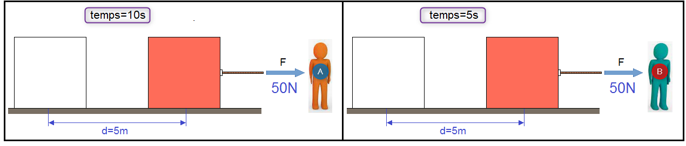
Per tant, direm que la persona que ha sigut capaç de fer el treball en un temps de 5 segons (persona_B) té més potència que la persona que ha fet el mateix treball en un temps de 10 segons (persona_A).
Unitats
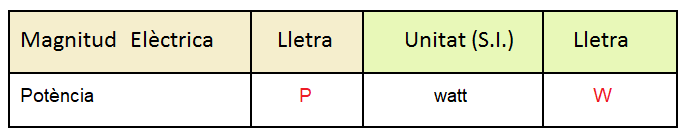
La magnitud física Potència es representa per la lletra P i té com unitat en el Sistema Internacional el Watt que es representa mitjançant la lletra W.
L'expressió que ens relaciona la potència (P) i l'energia (E) la podem obtenir a partir del triangle potència-energia:
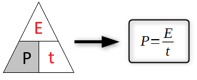
- P: potència en watts (W)
- E: energia en joules (J)
- t: temps en segons (s)
Ara ja podem calcular la potència realitzada per la persona_A i per la persona_B i comprovar la veracitat de l'afirmació anterior: P(persona_B) > P(persona_A).
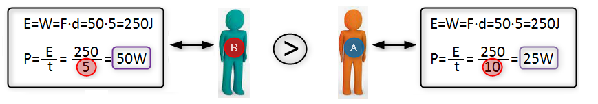
Potència Elèctrica
La pregunta que ens podem fer ara és la següent: quina és l'expressió que s'utilitza en electricitat per calcular la potència elèctrica?
Hem vist anteriorment que hi ha una relació entre les magnituds energia i potència (triangle potència-energia), per tant la potència rep el nom de Potència Elèctrica quan aquesta energia sigue d'origen elèctric:
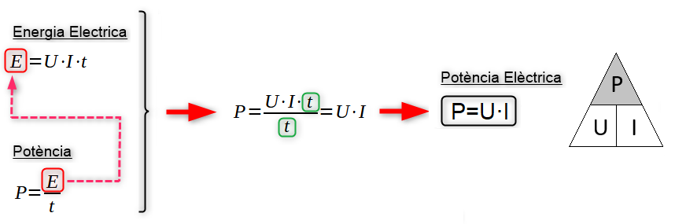
La Potència Elèctrica es defineix com el producte de la Tensió per la Intensitat de Corrent.
Si comparem les expressions que ens permeten calcular la potència i l'energia elèctrica observarem que son idèntiques quan aquest càlcul es fa per unitat de temps:
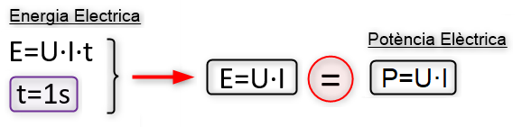
Per tant, podem afirmar:
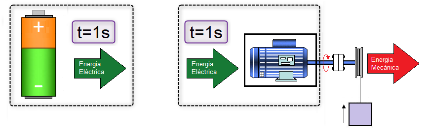
La Potència Elèctrica d'una pila o bateria es la quantitat d'energia per unitat de temps (t=1s) que és capaç de subministrar al circuit elèctric.
La Potència Elèctrica d'un receptor elèctric es la quantitat d'energia per unitat de temps (t=1s) que és capaç de convertir en un altre tipus d'energia.
Unitats
Segons la relació que hem vist anteriorment entre l'energia i potència elèctrica podem definir la unitat de potència, el watt, com:
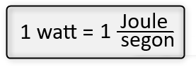
1 watt (w) és un joule d'energia subministrat durant 1 segon.
En instal·lacions elèctriques els consums dels receptors elèctrics solen ser elevats, aleshores a més del watt, es solen utilitzar el seus múltiples com poden ser:
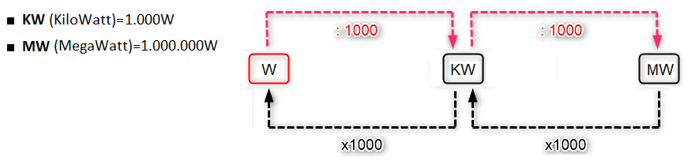
En canvi, en electrònica els consums solen ser més xicotets i es sol utilitzar, a més del watt, el següent submúltiple:
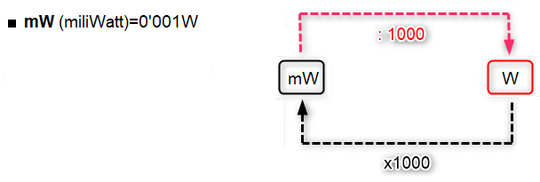
Unitat d'energia Elèctrica: el KiloWatt hora (KWh)
En electricitat, quan es vol mesurar el consum d'energia de les llars, dels edificis comercials o de les indústries no s'utilitza el Joule com unitat d'energia ja que els valors d'energia elèctrica que obtindríem quan féssim els càlculs serien molt elevats i dificultarien la interpretació del resultats. Aleshores, les Empreses Subministradores d'Electricitat (E.S.E) utilitzen una unitat superior d'energia per fer càlculs de consum d'energia, el Kilowatt hora (KWh).
1 KWh és el consum d'energia que té un receptor elèctric de potència P=1KW durant un temps d'1 hora i equival a un consum d'energia de 3'6MJ.
El càlcul del consum d'energia en KWh és molt senzill si s'utilitza la següent expressió i les unitats correctes: els KW per la potència i les hores pel temps.
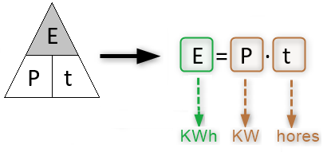